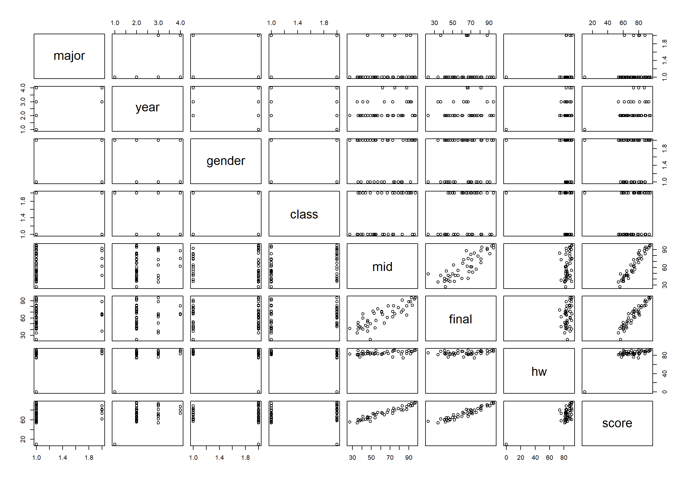
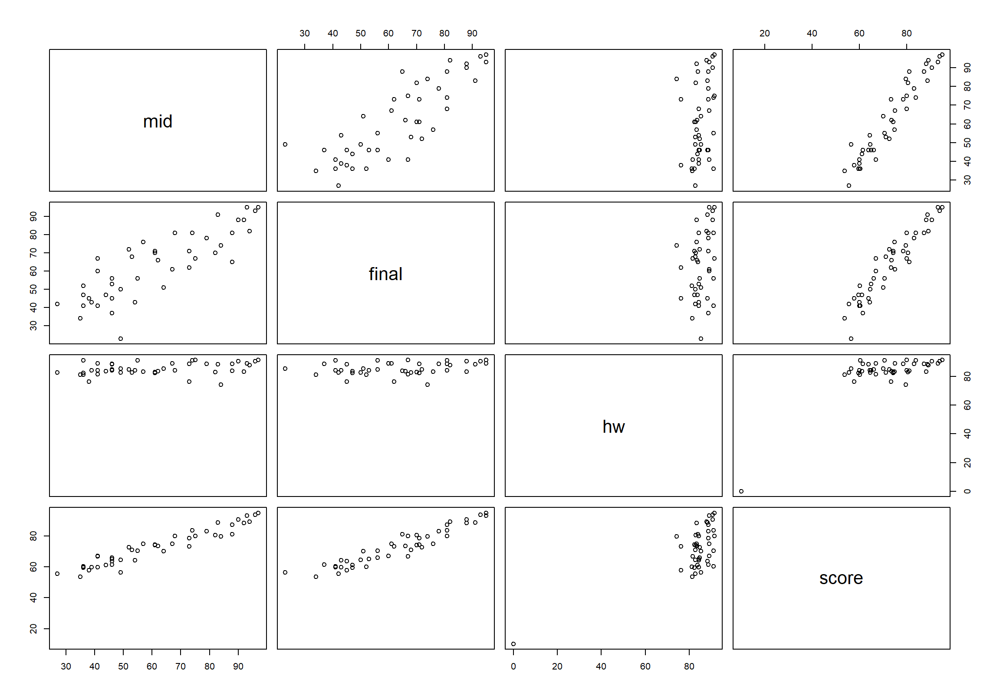

Chapter 6 기술통계 분석이란?
6.1 기술통계 기법의 중요성
통계 데이터 분석에서 가장 쉽게 빠지는 오류 중에 하나가 데이터 자체에 대한 깊은 탐구 이전에 추론통계 기법을 성급히 적용하는 것이다. 추론통계 기법은 확률적 원리를 기반으로 하고 있는 강력한 데이터 분석 방법이긴 하지만, 추론통계 분석에서 사용되는 모형들은 데이터의 분포에 대한 많은 가정을 수반한다. 실제 데이터가 그러한 가정에 부합되지 않으면 추론통계 분석의 결과는 올바른 결과가 될 수 없다. 그러므로 추론통계 기법을 사용하기 전에 그러한 기법의 사용이 타당한지 데이터의 실제 분포에 대한 확인이 필요하다.
그러므로 통계 데이터 분석의 첫 단계이면서 가장 중요한 작업은 데이터 자체를 찬찬히 들여다 보는 것이다. 데이터가 들려주는 현상의 이면에 대하여 마음을 열고 경청하는 것이다.
앞서 설명하였듯이 통계 데이터는 방대하다. 그냥 찬찬히 들여다 보는 것만으로는 데이터의 이면을 파악하기 힘들다. 기술통계 분석 기법은 데이터의 다양한 측면을 일목요연 하게 파악할 수 있도록 도와준다. 따라서 추론통계 기법을 사용하기 이전에 우리는 다양한 관점에서 데이터를 요약해 보아야 한다. 그러기 위해서는 기술통계 분석 기법에 숙달되어야 한다.
기술통계 분석은 분석의 시작 단계로서의 중요성 뿐만 아니라, 다른 사람들에게 통계 데이터에 대한 요약된 정보를 제공하기 위해서도 필요하다. 실제 기업의 실무에서는 현상에 대한 소통을 위해 기술통계 분석이 추론통계 분석보다 빈번하게 이용된다.
6.2 기술통계 기법의 분류
그림 6.1은 기술통계 기법의 종류를 보여준다. 기술통계 기법은 크게 세 가지 관점에서 나누어 살펴볼 수 있다.
데이터 요약을 수치로 할 것인지 그래프로 할 것인지에 따라 기술통계 분석은 크게 수치로 요약하는 기법과 그래프로 요약하는 기법으로 나눌 수 있다.
1.4 절에서 우리는 통계 데이터에서 변수가 질적 정보를 다루는 범주형 변수와 양적 정보를 다루는 수치형 변수로 나누어진다고 하였다. 기술통계 분석에서는 분석하고자 하는 변수의 종류에 따라 요약의 방법이 달라진다.
기술통계는 주로 변수 하나하나의 분포를 알아보기 위해 사용되기도 하지만, 변수 사이의 상관성을 확인하기 위해서도 사용된다.
이 책에서는 먼저 범주형 변수에 대한 수치와 그래프로 요약하는 기술통계 기법을 먼저 살펴보고, 수치형 변수에 대한 기술통계 기법을 살펴본다. 그리고 마지막으로 범주형 변수와 수치형 변수가 혼재되어 있는 경우의 기술통계 기법에 대하여 살펴본다.
Figure 6.1: 기술통계 기법의 분류
6.3 bizstatp 패키지의 course 데이터
이 책에서는 R을 사용하여 기술통계 기법을 설명하면서 어떤 대학 과목의 수강생에 대한 데이터를 탐색해 나갈 것이다.
6.3.1 bizstatp 패키지 설치 방법
이 데이터는 bizstatp라는 패키지에 포함되어 있는데, 이 패키지는 지금까지 보았던 CRAN을 통해 배포되는 공식 패키지가 아니라, 이 책으로 공부하는 수강생들을 위해 제작하여 배포되는 비공식적인 패키지이다. 따라서 지금까지 설치했던 방법과는 조금 다른 방식으로 설치를 수행하여야 한다.
6.3.1.1 Github을 통한 패키지 설치
bizstatp 패키지는 Github에 최신 버전이 공개되어 있다. Github에 올려놓은 패키지를 설치하려면 먼저 CRAN에서 devtools 패키지를 먼저 설치되어야 한다. 다음 명령을 R 콘솔에서 수행하든지 아니면 RStudio의 오른쪽 아래의 Package 탭을 이용하여 devtools 패키지를 설치한다.
> install.packages("devtools")devtools 패키지가 설치되었다면 R 콘솔에서 다음 명령을 실행하여 bizstatp 패키지를 설치한다.
> devtools::install_github("kilhwan/bizstatp")설치가 완료되었으면 제대로 설치되었는지 확인하기 위해서 bizstatp 패키지를 적재하고 패키지에 포함되어 있는 course 데이터를 출력해 보자.
> library(bizstatp)
> course major year gender class mid final hw score
1 Others 4 M 1 62 66 83.60 73.47
2 Others 3 F 1 46 37 88.70 61.50
3 ME 2 M 1 94 82 87.90 89.18
4 ME 2 M 1 73 71 88.70 78.47
5 ME 2 M 1 96 93 90.60 93.88
6 ME 2 M 1 54 43 84.30 64.39
7 ME 2 M 1 52 72 84.70 72.60
8 ME 2 M 1 27 42 82.80 55.54
9 ME 2 M 1 41 41 84.30 59.89
......이 모든 과정이 잘 이루어졌으면 설치가 잘 수행된 것이다. 따라서 다음 R 세션에서 bizstatp 패키지를 재설치하지 않고 library() 함수로 메모리에 적재만 다시 하면 된다. 같은 R 세션에서는 한번 패키지를 적재하면 다시 적재할 필요가 없다.
6.3.2 course 데이터
앞의 결과에서 보듯이 course 데이터는 어는 대학 과목의 수강생 데이터이다. 그 과목을 들은 수강생 45명의 전공(major), 학년(grade), 성별(gender), 분반(class), 중간고사 점수(midterm), 기말고사 점수(final), 숙제 점수(hw), 최종 평가 점수(scores)가 포함되어 있다. 전공은 ME 전공인가 기타 전공인가로 구분되어 있고, 분반은 해당 과목이 2개의 분반으로 진행되었으므로 1분반, 2분반으로 구분되어 있다.
이 책 전체를 통해서 위와 같이 course 데이터를 포함하고 있는 bizstatp 패키지가 이미 적재되어 있다고 가정하고 설명을 한다.
6.4 데이터 전체에 대한 요약 정보 파악하기
변수 하나하나를 분석하기에 앞서 데이터의 전체적인 모습을 먼저 파악하는 것이 좋다. 그래야 어떤 변수를 더 중점적으로 분석할지 판단할 수 있고 데이터에 문제가 없는지 분석 전에 파악할 수 있기 때문이다.
6.4.1 summary() 함수를 이용하여 변수 별로 통계 요약하기
데이터의 모든 열에 대하여 수치적으로 요약해 보고 싶으면 summary() 함수를 사용한다.
> summary(course) major year gender class mid final
ME :40 1: 1 F:18 1:22 Min. :27.00 Min. :23.00
Others: 5 2:32 M:27 2:23 1st Qu.:45.50 1st Qu.:47.00
3: 9 Median :59.00 Median :65.50
4: 3 Mean :61.61 Mean :63.16
3rd Qu.:79.75 3rd Qu.:76.50
Max. :97.00 Max. :95.00
NA's :1 NA's :1
hw score
Min. : 0.00 Min. :10.00
1st Qu.:82.80 1st Qu.:61.50
Median :84.30 Median :72.60
Mean :83.37 Mean :71.46
3rd Qu.:88.70 3rd Qu.:80.49
Max. :91.33 Max. :95.00
summary() 함수는 데이터의 프레임의 각 열에 대한 통계요약 정보를 보여준다.
- 범주형 변수(열)는 각각의 범주 별로 절대 빈도(관측 횟수)를 보여준다.
gender열을 요약한 결과를 보면course데이터에 여자(F)가 18 명, 남자(M) 27 명 포함되어 있음을 볼 수 있다. - 수치형 변수(열)는 최소값(Min.), 최대값(Max.), 평균(Mean), 1분위수(1st Qu.), 중위수(Median), 3분위수(3rd Qu.)로 요약하여 정보를 보여준다.
score열에 대한 요약 정보를 확인하라. - 아울러 열에 결측치가 있으면
NA라는 항목으로 결측치의 개수를 보여준다. 중간고사(mid) 열과 기말고사(final) 열에 한 개씩 데이터가 없는 결측치가 있음을 볼 수 있다.
6.4.2 plot() 함수를 이용한 변수 사이의 상관성 파악
변수들 사이의 상관성을 빠르게 검토하고 싶으면 R의 기본 graphics 패키지의 plot() 함수를 사용한다. plot() 함수를 데이터 프레임에 적용하면 데이터 프레임의 모든 두 변수 조합에 대한 산점도를 행렬 형태로 보여준다.
> plot(course)
course 데이터의 수치형 변수들 간의 산점도만 파악하려면 5 번째에서 8 번째 변수가 수치형 변수이므로 다음처럼 course 데이터의 열을 필터링하면 수치형 변수 사이의 산점도를 확인할 수 있다.
> plot(course[, 5:8])
중간고사(mid), 기말고사(final), 총점(score) 사이의 강한 양의 상관성이 보이나, 숙제 점수(hw)과 다른 변수의 상관성을 약함을 확인할 수 있다.